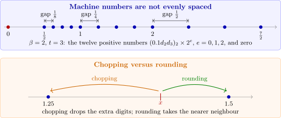

1.2 Round-off errors and computer arithmetic
Floating-point numbers
A computer stores a real number in floating-point form \[\pm \,(0.d_1d_2\ldots d_t)_\beta \times \beta ^{e} = \pm \left (\frac {d_1}{\beta }+\frac {d_2}{\beta ^2}+\dots +\frac {d_t}{\beta ^t}\right )\beta ^e,\] where \(\beta \) is the base, \(t\) the number of digits of the mantissa, \(0\leq d_i\leq \beta -1\), and the exponent \(e\) lies in a fixed range \(L\leq e\leq U\). The number is normalized if \(d_1\neq 0\). Only finitely many numbers have this form, and they are not evenly spaced: between consecutive powers of \(\beta \) there are always the same number of them, so the gaps grow with the size of the numbers.

Definition 1.2.1. The IEEE 754 double-precision format, used by almost all present-day computers, stores a number in 64 bits: one sign bit \(s\), an 11-bit exponent \(c\) and a 52-bit fraction \(f\), representing \[(-1)^s\,2^{c-1023}\,(1+f), \qquad 0\leq f<1 .\] The leading \(1\) is not stored, so the mantissa effectively has 53 binary digits.
Solution. The sign bit is \(0\), so the number is positive. The exponent is \(c = 2^{10}+2^1+2^0 = 1027\), so the power is \(2^{1027-1023} = 2^4\). The fraction is \[f = \frac 12+\frac 18+\frac 1{16}+\frac 1{32}+\frac 1{256}+\frac 1{4096} = 0.72290039\ldots \] Hence the number is \(2^4(1+f) = 16\times 1.722900390625 = 27.56640625\). Its neighbours in the format differ from it by \(2^{4-52}\approx 3.6\times 10^{-15}\), and every real number within half that distance of it is stored as \(27.56640625\).
Note. In double precision the largest number is \((2-2^{-52})2^{1023}\approx 1.8\times 10^{308}\) and the smallest normalized positive number is \(2^{-1022}\approx 2.2\times 10^{-308}\). Results larger than the first cause overflow; results smaller than the second cause underflow. The spacing of the numbers next to \(1\) is \(\varepsilon _{\text {mach}} = 2^{-52}\approx 2.22\times 10^{-16}\), the machine epsilon. Double precision therefore carries about \(16\) significant decimal digits.
For hand calculation it is convenient to work with \(k\)-digit decimal numbers \(\pm 0.d_1d_2\ldots d_k\times 10^n\), \(d_1\neq 0\). Any positive real number can be written \[y = 0.d_1d_2\ldots d_kd_{k+1}d_{k+2}\ldots \times 10^n .\] Its floating-point form \(\fl (y)\) is obtained by chopping, which simply discards the digits \(d_{k+1}d_{k+2}\ldots \), or by rounding, which adds \(5\times 10^{n-(k+1)}\) to \(y\) and then chops.
Example 1.2.3. Give the five-digit chopping and rounding values of \(\pi = 0.314159265\ldots \times 10^1\).
Solution. Chopping: \(\fl (\pi ) = 0.31415\times 10^1 = 3.1415\). Rounding: the sixth digit is \(9\geq 5\), so the fifth digit is increased: \(\fl (\pi ) = 0.31416\times 10^1 = 3.1416\).
Measuring error
Definition 1.2.4. Let \(p^*\) be an approximation to \(p\). The absolute error is \(|p - p^*|\) and, if \(p\neq 0\), the relative error is \(\dfrac {|p-p^*|}{|p|}\). The percentage error is \(100\) times the relative error.
Example 1.2.5. Compare the absolute and relative errors of (a) \(p = 0.3000\times 10^1\) approximated by \(p^* = 0.3100\times 10^1\); (b) \(p = 0.3000\times 10^{-3}\) by \(p^* = 0.3100\times 10^{-3}\); (c) \(p = 0.3000\times 10^4\) by \(p^* = 0.3100\times 10^4\).
Solution. In all three cases the relative error is \(\frac {0.0100}{0.3000} = 0.\overline {3}\times 10^{-1}\), a percentage error of \(3.\overline {3}\%\). The absolute errors are \(0.1\), \(0.1\times 10^{-4}\) and \(0.1\times 10^3 = 100\). The absolute error depends on the size of the numbers; the relative error does not. For this reason the relative error is the better measure of accuracy, and it is the one floating-point arithmetic controls.
Definition 1.2.6. The number \(p^*\) approximates \(p\) to \(t\) significant digits if \(t\) is the largest non-negative integer for which \[\frac {|p-p^*|}{|p|}\leq 5\times 10^{-t}.\]
Example 1.2.7. How many significant digits do \(\frac {22}{7}\), \(3.14\) and \(3.1416\) give for \(\pi \)?
Solution. The relative errors are
| \(p^*\) | relative error | significant digits |
| \(22/7 = 3.142857\ldots \) | \(4.02\times 10^{-4}\) | \(3\) |
| \(3.14\) | \(5.07\times 10^{-4}\) | \(3\) |
| \(3.1416\) | \(2.34\times 10^{-6}\) | \(5\) |
For example \(4.02\times 10^{-4}\leq 5\times 10^{-3}\) but \(4.02\times 10^{-4}>5\times 10^{-4}\), so \(\frac {22}{7}\) gives three significant digits. The familiar fraction is no better than \(3.14\).
Theorem 1.2.8. Let \(y\neq 0\) and let \(\fl (y)\) be its \(k\)-digit decimal floating-point form. Then \[\frac {|y-\fl (y)|}{|y|}\leq \begin {cases}10^{-k+1}, & \text {chopping},\\[2pt] \tfrac 12\times 10^{-k+1}, & \text {rounding}.\end {cases}\]
Proof. Write \(y = 0.d_1d_2\ldots d_kd_{k+1}\ldots \times 10^n\) with \(d_1\neq 0\). For chopping, \[\frac {|y-\fl (y)|}{|y|} = \frac {0.d_{k+1}d_{k+2}\ldots \times 10^{n-k}}{0.d_1d_2\ldots \times 10^n} = \frac {0.d_{k+1}d_{k+2}\ldots }{0.d_1d_2\ldots }\times 10^{-k}.\] The numerator is less than \(1\) and, since \(d_1\geq 1\), the denominator is at least \(0.1\). So the ratio is at most \(\frac {1}{0.1}\times 10^{-k} = 10^{-k+1}\). For rounding, \(\fl (y)\) is the nearer of the two \(k\)-digit neighbours of \(y\), which are \(10^{n-k}\) apart, so \(|y-\fl (y)|\leq \frac 12\times 10^{n-k}\), and dividing by \(|y|\geq 0.1\times 10^n\) gives the bound \(\frac 12\times 10^{-k+1}\). □
The number \(u = \frac 12\beta ^{1-t}\) (here \(\frac 12\times 10^{1-k}\)) is the unit round-off. The theorem says exactly that \[\fl (y) = y(1+\delta ),\qquad |\delta |\leq u,\] and computer arithmetic is designed so that the same holds for each operation: if \(\odot \) is \(+\), \(-\), \(\times \) or \(\div \), then \(\fl (x\odot y) = (x\odot y)(1+\delta )\) with \(|\delta |\leq u\). In this model each single operation is accurate; errors arise from accumulating many operations and, above all, from the next phenomenon.
Finite-digit arithmetic and loss of significance
To model a \(k\)-digit computer we replace each arithmetic operation by \begin {align*} x\oplus y &= \fl (\fl (x)+\fl (y)), & x\ominus y &= \fl (\fl (x)-\fl (y)),\\ x\otimes y &= \fl (\fl (x)\times \fl (y)), & x\oslash y &= \fl (\fl (x)\div \fl (y)). \end {align*}
Example 1.2.9. Let \(x = \frac 57\), \(y = \frac 13\) and \(u = 0.714251\), \(v = 98765.9\), \(w = 0.111111\times 10^{-4}\). Use five-digit chopping to compute \(x\oplus y\), \(x\ominus u\) and \((x\ominus u)\oslash w\), and find the relative errors.
Solution. Here \(\fl (x) = 0.71428\), \(\fl (y) = 0.33333\) and \(\fl (u) = 0.71425\).
\(x\oplus y = \fl (1.04761) = 0.10476\times 10^1\). The true value is \(\frac {22}{21} = 1.047619\ldots \), so the relative error is \(1.8\times 10^{-5}\): well within the bound \(10^{-4}\) of Theorem 1.2.8.
\(x\ominus u = 0.71428 - 0.71425 = 0.30000\times 10^{-4}\). The true value is \(x - u = 0.347143\times 10^{-4}\), so the relative error is \[\frac {0.347143-0.30000}{0.347143} = 0.136 .\] A single subtraction has produced an answer that is \(14\%\) wrong, although both operands were correct to five digits.
\((x\ominus u)\oslash w = \frac {0.30000\times 10^{-4}}{0.11111\times 10^{-4}} = 0.27000\times 10^1\), against the true value \(3.1243\): the large relative error of the difference is carried into the quotient.
What happened in the subtraction is called loss of significance or cancellation. The leading four digits of \(\fl (x) = 0.71428\) and \(\fl (u) = 0.71425\) agree, so they cancel, and the result has only one significant digit: the digit that came from the rounding errors already present in \(x\) and \(u\). Subtracting nearly equal numbers does not create error, but it exposes the errors the numbers already carried, by making them large relative to the answer. Good numerical practice rearranges a calculation to avoid such subtractions.
Example 1.2.10 (The quadratic formula). The roots of \(x^2+62.10x+1 = 0\) are \(x_1 = -0.01610724\) and \(x_2 = -62.08390\), to seven significant digits. Compute them by the quadratic formula in four-digit rounding arithmetic, and show how to avoid the loss of accuracy.
Solution. In four-digit rounding, \[b^2 - 4ac = 3856 - 4 = 3852,\qquad \sqrt {3852} = 62.06 .\] The usual formula gives \begin {gather*} x_1 = \frac {-62.10+62.06}{2} = \frac {-0.04000}{2} = -0.02000,\\ x_2 = \frac {-62.10-62.06}{2} = -62.08 . \end {gather*} The relative error in \(x_2\) is \(2.6\times 10^{-4}\), but in \(x_1\) it is \[\frac {|-0.01611+0.02000|}{0.01611} = 0.24 ,\] because \(-b+\sqrt {b^2-4ac}\) subtracts nearly equal numbers. Rationalizing the numerator removes the subtraction: \[x_1 = \frac {-b+\sqrt {b^2-4ac}}{2a}\cdot \frac {-b-\sqrt {b^2-4ac}}{-b-\sqrt {b^2-4ac}} = \frac {-2c}{b+\sqrt {b^2-4ac}} = \frac {-2}{62.10+62.06} = \frac {-2}{124.2} = -0.01610,\] with relative error \(4.5\times 10^{-4}\). The rule is: when \(b>0\) compute \(x_2\) from the usual formula and \(x_1\) from the rationalized one (or from \(x_1x_2 = c/a\)); when \(b<0\), do the opposite.
Example 1.2.11 (Nested multiplication). Evaluate \(f(x) = x^3-6.1x^2+3.2x+1.5\) at \(x = 4.71\) using three-digit arithmetic, both directly and in the nested form \(f(x) = ((x-6.1)x+3.2)x+1.5\). The exact value is \(f(4.71) = -14.263899\).
Solution. The intermediate results are:
| \(x^2\) | \(x^3\) | \(6.1x^2\) | \(3.2x\) | direct | nested | |
| chopping | \(22.1\) | \(104\) | \(134\) | \(15.0\) | \(-13.5\) | \(-14.2\) |
| rounding | \(22.2\) | \(105\) | \(135\) | \(15.1\) | \(-13.4\) | \(-14.3\) |
With chopping, the direct evaluation has relative error \(5.4\%\) and the nested one \(0.45\%\); with rounding, \(6.1\%\) and \(0.25\%\). The nested form uses two multiplications instead of four, so it is cheaper, and it avoids the subtraction of the large nearly equal numbers \(104\) and \(134\). Nested evaluation of polynomials is called Horner’s method; we return to it in the section on zeros of polynomials.
Questions on this section
Stuck on something here? Ask below and it stays attached to this topic.